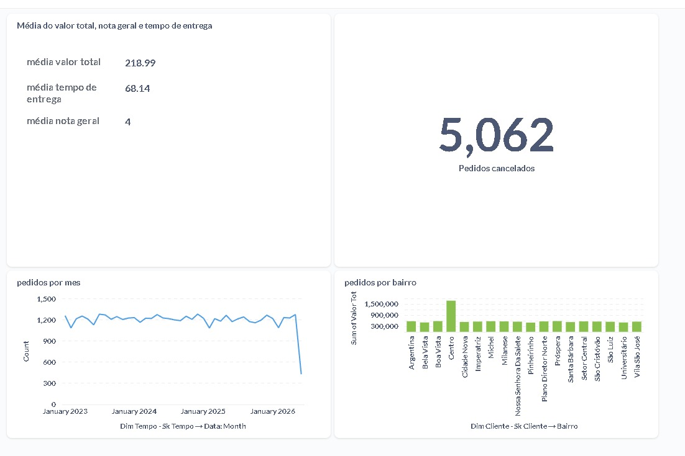

Dashboard — KPIs e Métricas¶
O dashboard consome os dados da camada Gold via Metabase, conectado ao schema analytics do PostgreSQL.
As tabelas são populadas automaticamente pela tarefa export_to_pg ao final de cada execução do pipeline.
Acesso¶
| Serviço | URL | Credenciais |
|---|---|---|
| Metabase | http://localhost:3000 | Configurar no primeiro acesso |
Configuração da fonte de dados no Metabase¶
Após o primeiro acesso, conecte ao banco de análise:
- Admin → Databases → Add Database
- Preencha:
- Database type: PostgreSQL
- Host:
postgres - Port:
5432 - Database name:
sparkeats - Schema:
analytics - Username:
sparkeats - Password:
sparkeats_dev - Clique em Save e aguarde a sincronização dos metadados.
Tabelas disponíveis (schema analytics)¶
| Tabela | Descrição |
|---|---|
fato_pedidos |
Tabela fato com métricas de pedidos |
dim_tempo |
Dimensão de tempo (calendário 2023–2026) |
dim_cliente |
Dimensão cliente (SCD Tipo 2 — apenas registros ativos) |
dim_restaurante |
Dimensão restaurante (SCD Tipo 2 — apenas ativos) |
dim_entregador |
Dimensão entregador |
dim_pagamento |
Dimensão forma/status de pagamento |
KPIs¶
| # | KPI | Cálculo | Tabela origem |
|---|---|---|---|
| 1 | Ticket Médio | SUM(valor_total) / COUNT(*) |
fato_pedidos |
| 2 | Taxa de Cancelamento | COUNT(status_pedido='CANCELADO') / COUNT(*) * 100 |
fato_pedidos |
| 3 | Tempo Médio de Entrega | AVG(tempo_entrega_min) |
fato_pedidos |
| 4 | Avaliação Média | AVG(nota_geral) |
fato_pedidos |
Métricas¶
| # | Métrica | Descrição | Tabela origem |
|---|---|---|---|
| 1 | Pedidos por Período | Volume de pedidos agregado por dia / semana / mês | fato_pedidos + dim_tempo |
| 2 | Receita por Zona | Faturamento total agrupado por zona de entrega do restaurante | fato_pedidos + dim_restaurante |
Filtros sugeridos¶
- Período (data início / data fim)
- Restaurante
- Zona de entrega
- Forma de pagamento
- Status do pedido
Ferramenta de visualização¶
Metabase — executado em Docker na porta 3000.

Fonte dos dados
O Metabase lê do schema analytics no PostgreSQL, populado automaticamente
pela tarefa export_to_pg no final de cada DAG (full e incremental).